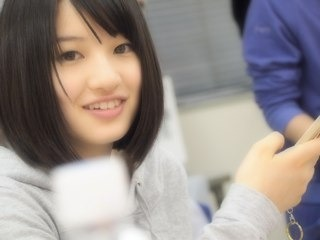

2012/0329Thu（´-`）.｡oO(かずみん×49
みなさんこんばんは！
いつも応援してくださって
ありがとうございます(*^^*)
さっき雑貨屋さんに行ったら
モーニング娘。の『しょうがない夢追い人』
が流れていて身体が勝手に踊ってしまった
高山です(*^^*)
いつか共演してみたいなぁ(//∇//)
-------------------
さて、とても嬉しいお知らせです！
乃木坂46新番組が決まりました(=´∀｀)人
その名も"乃木坂浪漫"
毎回メンバー1人ずつ小説の名作を
紹介していきます！
ちなみに私は#7放送予定ですので、
楽しみに待っててください♪(´ε｀
)
詳細は見てからのお楽しみに〜(*^_^*)
詳しくは番組HPを見てくださいね(^^)
--------
花奈のブログに出現してました^^;
すっぴん...笑
ということで今日の一枚は花奈♪

ファンタジックフォーカス＋望遠で
自然な花奈の不意打ちショットが
撮れました( ´ ▽ `
)
高山＆中田コンビは食べ物の好みが
とても似てます！
れなりんはうちらのコンビ好きって
言ってくれました(#^.^#)
花奈もれなりんも大好きです(*^o^*)
-----------
今日はまいまいの誕生日\(//∇//)\
おめでとう！
実はまいまいとまいやんとは
オーディションで一緒にいたんです！
最終審査前の貴重な
まいまいとの2ショット
懐かしいなぁ(*^_^*)
優しいまいまいが大好きです！
---------
質問返しいきます！
一番好きだった学校行事は？
→文化祭です(^^)
3年の春はカレー屋さんをしました♪
今度みなさんにお作りしましょうか^^？
運動できる人と勉強できる人
どっちが好き？
→できてもできなくても、頑張ってれば
素晴らしいし、頑張ってなくてもそれで
いいって思うのなら私はいいと思います。
前を向いている人、自分を持っている人が
私は好きです！
今日はこの辺で。
あぁ〜！
お風呂のお湯出しっぱなしにしてたの
忘れてましたΣ（・□・；）
たっぷりのお湯につかってきます...笑
それでは、
みなさん明日からも頑張りましょう(^^)
東京個別まであと1日\(//∇//)\
みなさんの笑顔を浮かべて、明日も私は
頑張ります！
おやすみなさい。
コメント(238)
一眼レフいいな〜欲しいよ
明後日握手会やん！！！！
乃木坂浪漫楽しみっ！
どんな番組になるんだろうなぁ
わくわく
31日の握手会もわくわくだなっ
れな＠横浜ですー(^O^☆)
一実ちゃんエアコンの掃除終わったの?笑
お疲れ様～（＠゜▽゜＠）ノ
新番組楽しみだなー(^ω^)
３１日会えるの楽しみにしてます(´ー｀)
れなりんのゆーことすごい分かるよ♪
俺もかずみんかなりんのコンビ好きやもん！！
だからかなりんレア写真あざっす(*^^*)
そーいえばさっきテレビに山口百恵が出てたよ～
見たカナ？
乃木ロマはかずみん7回目かぁ
なら次の週ってことかぁ
まぁ気長に待ちますね！
それより個握楽しみ\(//∇//)\
じゃあまたね☆
わたる
不意打ちのショット良いですね！自然な表情が撮れてます！
コメント結構最初の方な予感
あ、やべ←
前の記事コメントせな!!
って思てたら
新しい記事更新きてるw
すんまへん。笑
最近脳みそ使いすぎて
もうへとへとっす(笑)
早く乃木充して
癒されたいよお(;_;)
名古屋全握行きますぜ!
ちゃんと花見の誘い
断ったし!!笑
乃木坂浪漫始まりますね～
かずみんの回ちゃんと見れるように努力します(^_^)/
明日も頑張ろう!!
かずみんばんわ(*^o^*)
久々に車でドライブ行ったよ！
文化祭は楽しいよね！
高校で楽しかったの文化祭ぐらいしか…
でわでわこの辺でおやすみ(( _ _ ))..zzzZZ
尊敬するもっといっぱい載せて欲しいな\(//∇//)\
乃木坂浪漫は香川県は写らんのやー(T_T)
辛いよー
中田ブログの写真は俺得だったからすぐに保存しました!笑
中田とのコンビ俺も好きやからこれからもたくさん出てくると嬉しいな(^O^)
東京個別はいけれんけど大阪は行くから!!
体調には気を付けてね!
新番組おめでとう～♪
中田さん可愛くとれてるるね流石かずみん！
時間的にもう明日は東京個別だね楽しみにしてます(私服)
おやすみなさい
まいまいと仲良くしてあげてね←←(*^^*)
かずみん可愛いぜー！
ブログ更新ありがとう！
新番組やるんだね。内容がちょっと変わっててとても楽しみです。
絶対見ますよ(^o^)/
中田さんのブログ見ました。めちゃめちゃ良い笑顔だったね！
満面の笑みって感じでやっぱりかずみんは笑顔が似合う！
お風呂のお湯止めるの忘れちゃったり、エアコン止め忘れちゃったりって結構へこむよね。。。(´・ω・｀)分かります。
31日の個別行きますよ。楽しみにしてますね！
それでは(^-^)/~~
更新ありがとう(^_-)☆
かずみんモー娘聞くんだね♪
最近のはよく分からないわ(T_T)
昔は高橋愛ちゃん好きだったな～笑
共演できるといーね♪♪
新番組おめでとう(^^)♪
#7めっちゃ楽しみにしとーね(^-^)/
かなりんのブログみたよー！
かずみんの笑顔めっちゃいいね(＾ｰ^)ノ
うちもかずかなコンビダイスキやー！
まいまいおめでとうやね＼(^o^)／
上京したけど料理は毎日作るんかな？
料理は難しいけどやっていくうちに
うまくなるよ～(^^)
かずみんの料理食べたーい！
いよいよかずみんに会える～
楽しみだよ(*^o^*)
あと1日お仕事頑張りますー！
かずみんもファイト！
ダイそんで～す♪
かなりそかわいい！
まいまい
誕生日オメデトウ☆
中田高山ペアサイコー！
かなちゃん可愛い！かずみんナイス！✨
岐阜でも見れるんかなぁ( ；∀；)!?
見れんかったらめちゃショック…
不意討ちショットいいねぇ♪!!
まさに、素の顔だよ(^q^)
食べ物なにが好きなの？
あ、かずみん素っぴんでもイケるよ!!
言ったからにはカレー作ってよ(*^^*)？
美味しいの楽しみにしとるよー(^^)
お風呂はたっぷりのお湯の方がキモチイ！
いつかってたしか来週のMJで競演するよね？
観覧行くから楽しみにしてるねー！
乃木坂浪漫今から楽しみ！
かずみんは2週目かな？
かなりんの自然な表情いいね！
メンバーにしか撮れない写真だね(^∀'*)
日付変わって明日はかずみんに会える！
楽しみで今から眠れない←
色々お話しようね!!
ではでは
明日も1日頑張ろ～
今日もお疲れ様(*^_^*)
新番組楽しみー早くみたいなぁ♪
早くかずみんと握手したーい！
待ってろよ(笑)
ゆっくりお風呂につかって下さい(@^▽^@)
おやすみ♪
まずは曲探しからだ！！
乃木坂の新しい番組が決まったね
おめでとう(^○^)
でも俺の住んでる和歌山県ではおそらく見ることができない((+_+))
これぞ田舎和歌山のクオリティ笑
今日の一枚はかなりんだね
メンバーの不意打ちを狙うとか、かずみんかなりカメラ使いこなしていますな(@_@)
俺も最近デジカメ買おうかなと思ってるんよ
今カタログ集めに奔走中です笑
今日の名言コーナー(^^)/第9回目
今日の名言はこれだ！！
七転び八起きは、歩みの経験において避くベからざることである
今日はまいまいの誕生日（*^_^*）
まいまい、おめでとう！！
写メの二人は今と比べたらすごく初々しい感じがするね
もちろん｢中田花奈の良さを広めようの会｣の俺が見逃す訳ないじゃないですか←
↑どーん。
ん～、個別が楽しみだっ(^^)/
静岡ではテレ東見れないよー。かなりつらいです。
明日は年度末で仕事大変だけど明後日かずみんに会えると思うと仕事も頑張れそうです！
ー(☆。☆)ー
テレビでメンバーを見れる日が増えるって嬉しいね！
あとは、金曜と土曜日だな
かずみんの回楽しみにしてます！
まいまいとの2ショット、最終審査前とか貴重だね。
2人とも安定の可愛さだな。
お湯出しっぱなしとか、一人暮らしの最初によくあるミスだね笑
でも湯船に入った時に、お湯があふれる感じ好きだわ。エコじゃないけど・・・笑
俺も明後日楽しみにして明日頑張るわ！
僕もぐるぐるカーテン聴くと体が反応してしまうわ(^-^)v
二つ目の冠番組おめでとうヽ(・∀・)ノ
７話ってことは11日かな？
11日ならちょうど僕の誕生日や(^∇^)
楽しみにしとくな♪
かなりんのブログ見たよ!!
一実さんめっちゃ笑顔やったo(^o^)o
お湯あふれやんかった？
一実さんはドジだな(笑)
東京個別いけやん(T^T)
また私服ブログで教えて(^-^)/
体調には気をつけて!!
おやすみ♪
わたしも中田×高山のコンビ好きです。２ｎｄシングル選抜発表の時、心からそう思いました。
モー娘。といえばミキティが子ども産んだんだよね
乃木坂浪漫放送決定おめでとう♪
♯7は何百回見ることになるんだろう(笑)
そうだよね。
まいまい、誕生日なんだよね(^.^)
じゃあこの場をもって、
まいまい！誕生日おめでとう♪
(笑)
それじゃあこれくらいで！
今日も仕事お疲れ様(*^^*)
明日も頑張ろう
おやすみ
オーディションでたまたま撮ってたってのはすごいでやんすよね～！(＾＾)！(^^ゞ
かずみん可愛いだぎゃ～～( ^^)Y☆Y(^^ )この浪漫って聞いた時なんか妙にドキッ
としたと思ったらモー娘。でこういう曲があったなあって思い出しましたなりよ～(゜▽゜)o(^-^)o
もう随分前になっちゃったんだな～って思ったりでした(遠い目（笑）)。この流れで
一回群馬まで言ったことあるのはここだけの話でやんす～（笑）( ^^)Y☆Y(^^ )(゜▽゜)
そうそう、カナちゃんのサイトにもお出ましでしたね～。あれですっぴんなんですか～
かーなりLevel高いでしゅよ。こっちに写ってるカナちゃんもよか感じでやんすね～～
そっかー入れすぎちゃったらそれしかないでしゅよね～！(＾＾)！o(^-^)o
あ、なぜ高山っちは同い年のメンバーからも「かずみさん」って、何故さん付けで呼ばれるようになったのだろう？？？
こうゆう写真好きです。腕上がりましたね（笑）まいまいに、お誕生日おめでとう！とお伝えください。
かずみちゃんカレーは辛いんですか？
自分は辛い方が好きです。
明日も頑張ってねp(^-^)q
おやすみなさい
第7回に出るっと…………メモメモφ(..)
ファンタスティックフォーカスキターーヽ(・∀・)ノーー←まったく知らないけど(笑)
相変わらず、カメラマン高山良いの撮るなぁ。
オーディションの時にいた、三人が一緒に合格とかスゴいね！
今日も頑張ってこーう＼(^-^)／
2年の頃だけど！！（笑）
その頃花より男子が流行ってたから
Ｆ４やって遊んでた
早く握手したいな初かずみん緊張だよ
うまく話せなかったらゴメンね（ ; ; ）
俺も明日のバイト頑張る！！
13時間労働ww
くしゃっとした笑顔好き！
新番組おめです（´(ｪ)｀）！
観なきゃ観なきゃ（´(ｪ)｀＊）
個別行きたかったあああ！
次の個別まで会えないの寂しい…
別のレーンから見ときます！笑
更新嬉しいっす！
身体勝手に動くとかw ヲタクやな～（笑）
俺もペットボトルとか傘持つとラケットみたいに振っちゃうけどね←ちょっと違うか(￣◇￣;)
冠番組おめでとう！！
かずみんの回楽しみにしてるよ(^-^)/
かなりんブログ、かずみんの天使の笑顔に釣られてコメしてもうたww
もうね、やばいっす
二人の好きな食べ物気になる～！！
まいまいとの2ショット写真懐かしいね！
俺この間乃木どこの初回放送みてすごい懐かしく思ってたとこだから余計感動した(*･ω･*)/
いいよ、初々しくて
カレー俺にも作ってぇえええ(｡≧ω≦)ﾉ
めっちゃ食べたいわ、今度カレー会みたいなの開いて欲しい（笑）
あ、今日無事シングルス大会終えました
ここで言っちゃうともったいないから31日の時に言おうかな
決して期待はしないでください←笑
あと1日！
かずみんも身体に気をつけてね
☆☆☆(なお・ω・やん)☆☆☆
かなりんカワイイっ（*^_^*）♥
かなりん推しだけど、うちもめっちゃくちゃ
かなりん&かずみんペア大好きです(*^^)v
これからも仲良く頑張ってね！
久々のコメントの気がする一!早く2ndの曲発表しないかなぁ*楽しみ>
最終審査前の写真!きちょ一だね!!
質問いい?
最近見て面白かった本とか映画(DVDも)とかあったら教えて!
かずみん大好き!
目指せ紅白!
打倒、さしこ!w
◎はやはや
自分が小学生だった時とかはけっこう知ってたけどな～
勝手に踊って変な目で見られないようにねｗ
新番組おめでとう！どんな番組になるのか楽しみ♪
期待してるね！本当はもっと時間長いといいけどね・・・
昨日のかなりんのブログのすっぴんだったのか！
だからあんなに笑顔なのカナ？
今回の写真も綺麗だね！！
かなりんの肌の白さが際立つね～
また次も楽しみにしてるね！
まいまい誕生日だったね～いつもみたいにケーキあったの？
自分はまいまいと同い年なんだよね～
だから乃木坂最年長組ｗ
土曜日枚数は少ないけど楽しみにしてるね♪
やっぱり辛口なんやろか？？
ちなみに今日は本格インドカレーをナンで食べたよ( *｀ω´)
ナン美味し！！
かずみんウッヒー
かなりん(*゜∀゜)=3有り難うございます
はぁ━カワイイｗｗ
土曜日個別持ってるので画像のお礼にボーノポスターでもプレゼントで持って行きますね
ノノ;∂Д∂'ル＜ブラボー！ブラボー！ｗｗ
まいまいとかずみんの２ショットだ！
スゲー(≧ω≦)b
31日の握手会ちょー楽しみ(^_^)v
高山大好きだぁ～＼(☆o☆)／
モーニング娘。の『しょうがない夢追い人』とか懐かしすぎるｗ
勝手に身体が動いてしまったとかさすがアイドル好きのかずみんやな（笑）
このまま努力すれば必ず共演出来ると思うで！
“乃木坂浪漫”絶対見るな！
もちろんかずみんの回は絶対！
楽しみやわぁ(^O^)
花奈の不意打ちショットいい感じ(^_^)
ファンタジックフォーカス＋望遠って専門用語多くてよく分からんから次のブログで解説してよー（笑）
まいまい誕生日おめでとうやな(^w^)
これからも背中押していこな！
お風呂のお湯出しっぱとかドジやなぁ（笑）
質問→ファンタジックフォーカスって何？？
アイドル大好きかずみんが出たね(笑)わかんけど！！
中田ちゃん可愛すぎる！！かずみんは美少女☆
まいまい誕生日おめでとう(^3^)/
質問返しありがとうございます(^〇^)
体に気をつけてゆっくり休んでください(^_^)明日も１日頑張って行きましょう(^.^)
おやすみなさい♪
カレー大好きだからいつかかずみんが作ったの食べてみたい(>_<)
お風呂はたまにあるよね！
まえに、お風呂のお湯を捨てずにそのまま洗濯物干してたら水没したことあるよ(T_T)
……っはい。
しょーもない一人暮らしエピソードでした。
明日、笑顔届けに行くね☆
それじゃぁ…
おやすかずみんzzZ。
モー娘。はあんまり聞かないから今度聞いてみる！
けど恋ingとかなら知ってるし好きかなぁ
共演あるといいね～
乃木坂浪漫楽しみ～！
かずみんはなにを紹介するのだろうか・・・
もちろんチェックする！
紹介されたヤツチェックうぃるそん！
かなりんブログ見たよ！
くしゃっていう笑顔好きだから最高によかった！
相変わらずいい写真とるなぁ
なかなか不意打ちショットないから貴重だね～
三人とも大好きだあああ！←
あんまりまいまいとの2ショットないからレアだね！
オーディションの時から仲いいのかぁ3人は
ホントに優しいまいまい大好き！
そしてかずみん大好き！！
カレーとか毎日食べても飽きないからもう毎日作ってください←
前を向いてて自分を持ってる人かぁ
そう見られるようにがんばるよ！
お風呂のお湯出しっぱなしとか、たくさんのお湯につかるとかかずみんドジっ娘やなぁw
そんなかずみんも好きだぁ
明日も一日がんばって！！
たった二枚しかない個別、楽しみにしてるよ！！
個別握手会、
行けないけど楽しんでね！o(^▽^)o
かずみんの私服第二弾、
楽しみに待ってるわ( ´ ▽ ` )ﾉ
早くまた、乃木坂46のみんなに
会いに行けたらいいんだけど…
身体に気をつけて、
自分を大切にしながら、
お仕事頑張ってね(^-^)/
楽しみにしてます
それではっ


最終審査前に写メってたんだｗ
ある意味すごいな！